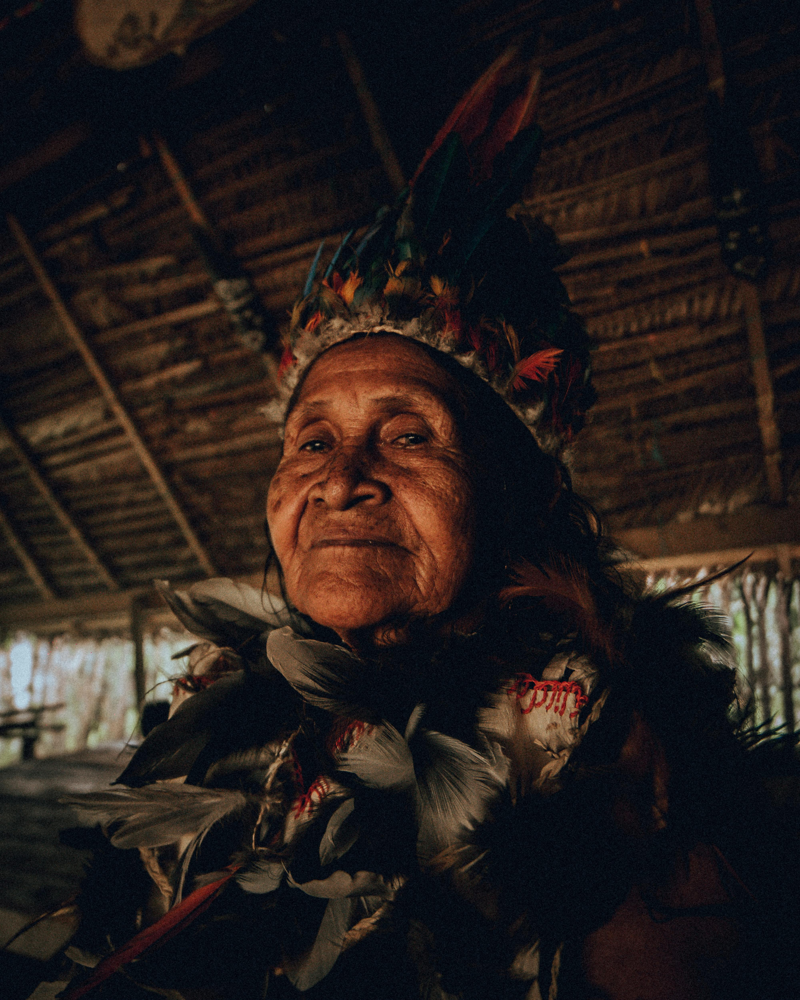

Resources
Elderly Woman in Traditional Clothing. Source:Pexels
Website:
Greenberg, Chris. "How deforestation is pushing the Amazon to a climate tipping point". 26 August 2022. greenpeace.org/international/story/55359/amazon-rainforest-facts-deforestation-fires-climate/. Acessed 25 April, 2025.
Images:
1. Fisk, Tom. Photo of Green Forest. 2019. Pexels. Acessed 25 April, 2025.
2. Menezes, Rodrigo. Vibrant Blue and Red Parrots in Natural Habitat. 2025.Pexels. Acessed 26 April, 2025.
3. Garcia, Kevin. Elderly Woman in Traditional Clothing. 2020. Pexels. Acessed 27 April, 2025.